整體節奏一覽
機票
| 去程（🌼：經新加坡） | 航班 | 時間 | 金額 |
|---|---|---|---|
| TPE → SIN | 酷航 TR875 | 00:10 → 出發 | NT$8,453 |
| SIN → KBV | 酷航 TR682 | 10:55 → 11:45 | |
| 於新加坡樟宜機場管制區轉機約 6 小時，不需入境新加坡。 | |||
| 去程（😈：經曼谷） | 航班 | 時間 | 金額 |
|---|---|---|---|
| PVG → BKK | 泰越捷 | 02:30 → 06:30 | NT$10,171 |
| BKK → KBV | 泰越捷 | 09:00 → 10:30 | |
| 在曼谷轉機約 2.5 小時，屬於「國際轉國內」，😈會在此清泰國海關（入境登記在 BKK 完成）。 | |||
| 國內線 12/29 | 航班 | 時間 | 金額 |
|---|---|---|---|
| KBV → BKK | 泰航 | 12:45 → 14:10 | NT$5,010（含行李） |
每人 4–5 段航班，是三個方案中航班最多的。
旅遊風格
安達曼海島＋曼谷都會玩樂＋河畔跨年。12 月是安達曼海最平靜、最清澈的季節，活動也最多元：跳島、攀岩、翡翠池、虎窟寺，加上曼谷玩樂日。
👍 強項
- 三個方案中海最美：安達曼海 12 月風平浪靜、海水清澈
- 風景最獨特：石灰岩海崖、萊雷海灘、皮皮島瑪雅灣
- 12/25 中午就到甲米，奧南住 4 晚，萊雷可以玩一整天
- 活動最多元：跳島、攀岩、翡翠池、虎窟寺、曼谷玩樂日
- 全程只住 2 間飯店
👎 劣勢
- 兩人都要搭紅眼班機，12/24 晚上在飛機和機場過夜
- 最貴，每人 4 段航班
- 😈要一個人在曼谷轉機，並在甲米機場等約 1 小時
- 戶外行程多，12/26–27 需要早起、需要體力
每日規劃
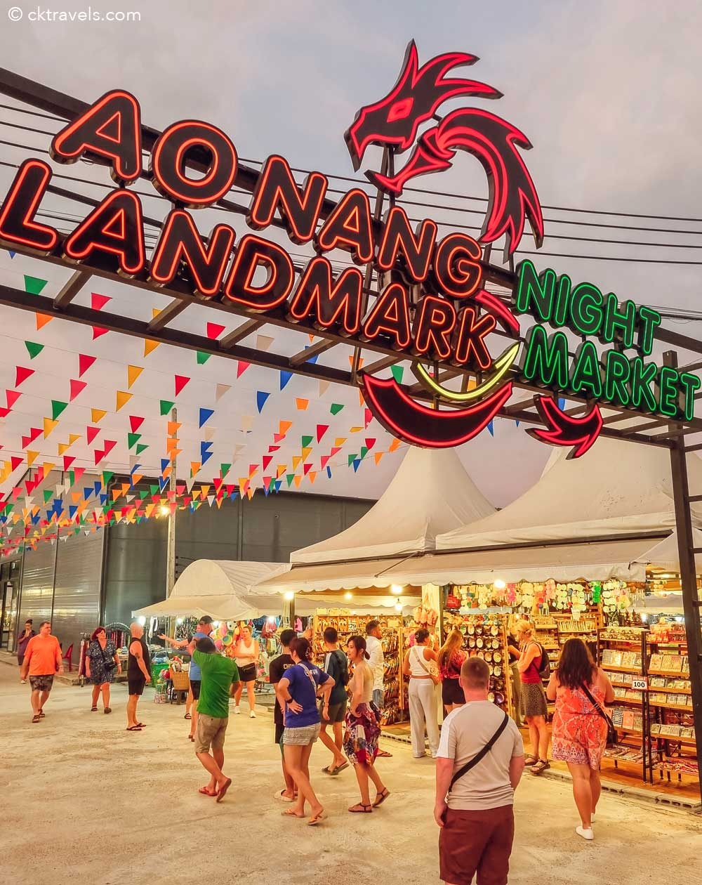
Ao Nang Landmark 夜市
每日營業的市集，現場音樂、傳統舞蹈、多國美食攤位，晚餐後散步的輕鬆選擇。
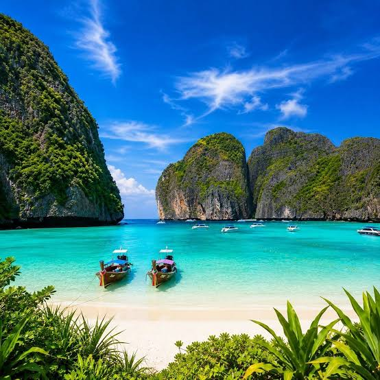
Maya Bay 瑪雅灣
電影《海灘》拍攝地，三面陡峭石灰岩懸崖環抱的白沙海灣，是這趟旅程最具代表性的畫面。目前為生態保育禁止下水游泳。
必看：環繞海灣的垂直懸崖、長尾船一字排開停靠沙灘
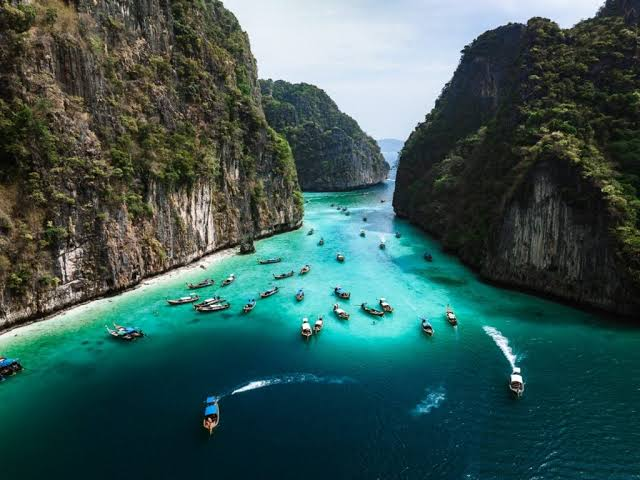
Pileh Lagoon 皮萊潟湖
四面被高聳懸崖包圍的封閉潟湖，海水呈夢幻的祖母綠色，是皮皮島跳島團的浮潛重頭戲。
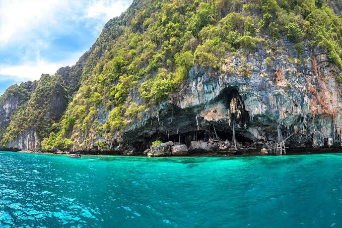
Viking Cave
皮皮雷島上的巨大海蝕洞，洞壁可見傳統燕窩採集的竹架痕跡。
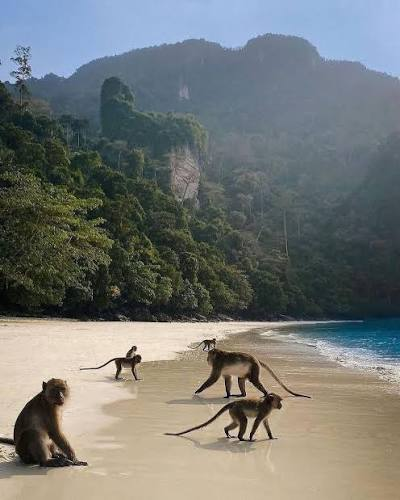
Monkey Beach
野生獼猴群聚的白沙灘，跳島團途中常見的短暫停靠點。
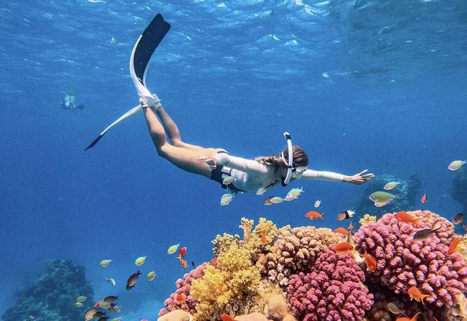
竹子島／蚊子島浮潛
水質清澈的浮潛點，珊瑚與熱帶魚群豐富，是跳島團下午的壓軸行程。
| 選項 | 內容 | 時間 |
|---|---|---|
| A. 初次水肺體驗潛水（DSD） | 推薦 Local Islands：2 次體驗潛水，含理論、裝備、午餐 | 08:00–08:30 飯店接，約 14:30–15:30 回 |
| B. 虎窟寺山景日 | 爬虎窟寺（1,260 階）→ 翡翠池＋溫泉瀑布 → 午餐 | 06:30 出發，下午回飯店休息 |
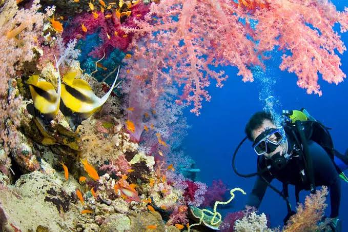
選項 A：初次水肺體驗潛水（DSD）
由教練帶領的入門體驗潛水，不需證照，含基礎理論與裝備教學，適合想嘗試水肺的新手。
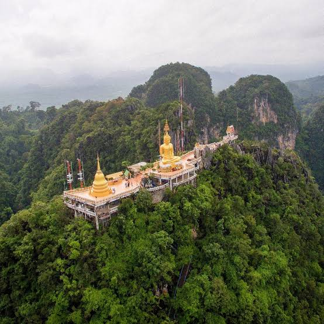
選項 B：Wat Tham Suea 虎窟寺
需爬 1,237 階石階攻頂 309 公尺山峰，山頂為修行寺院，沿途風景與挑戰性兼具。需穿著遮肩過膝服裝，沿途有猴群。
必看：「1,237 STEP TO TOP MOUNTAIN」入口告示牌、山頂俯瞰甲米全景
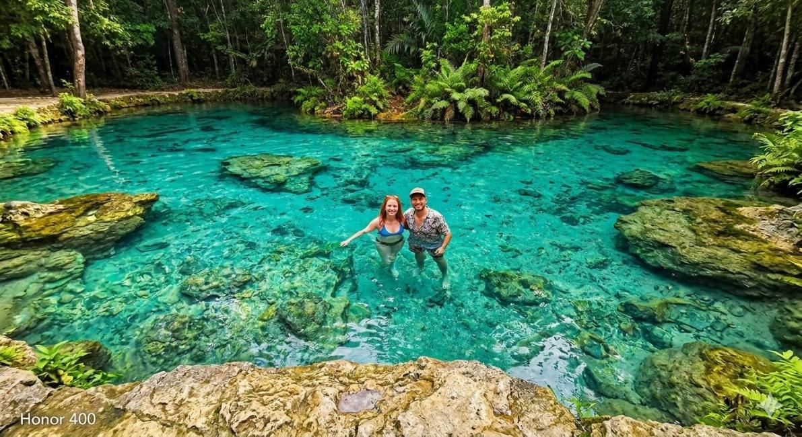
選項 B：Sa Morakot 翡翠池
叢林深處由溫泉水源形成的天然泳池，水色呈現罕見的翡翠綠，可直接下水消暑，外國成人門票約 200–400 THB。
Railay West Beach
兩側被高聳石灰岩懸崖環抱的沙灘，長尾船整齊停靠岸邊，是甲米地區最具代表性的畫面之一。
必看：沙灘上一整排彩色長尾船、懸崖攀岩者的身影
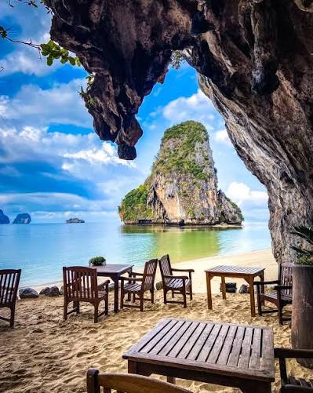
Phra Nang Cave Beach
巨大懸崖下方的海蝕洞穴沙灘，鐘乳石垂掛，海水清澈可直接下水游泳，是甲米最美的海灘之一。
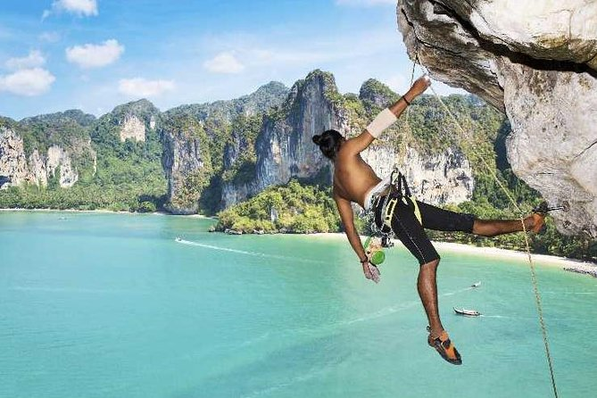
入門攀岩
萊雷是世界知名的攀岩勝地，沿海崖設有多條適合新手的入門路線，教練全程陪同確保安全。
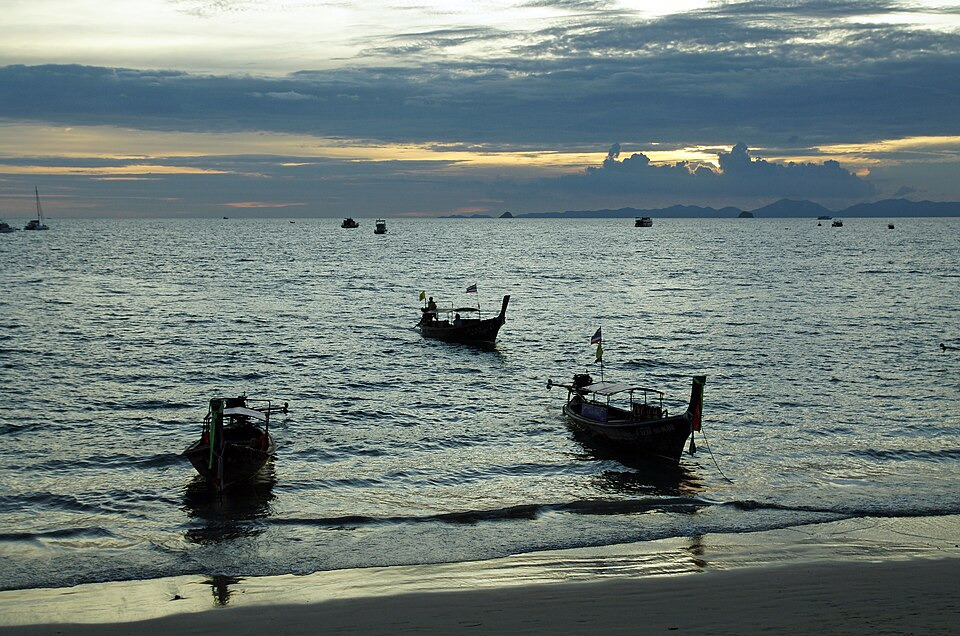
Ao Nang Beach 清晨
告別甲米前的最後一段海灘時光，晨光下的長尾船剪影格外寧靜。


泰式料理課
從市場採買到動手下廚，體驗泰式料理的完整製作過程，成品即為當晚晚餐。

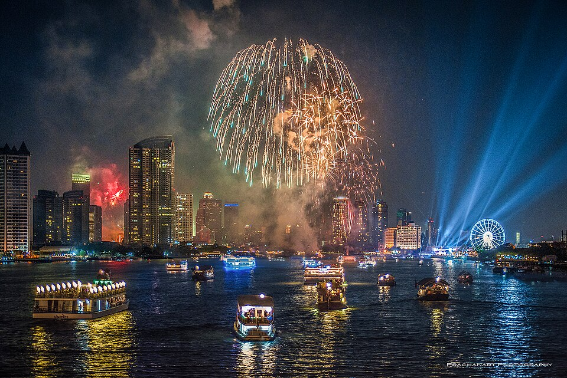
昭披耶河跨年煙火
午夜時分沿河兩岸多處同步施放煙火，是曼谷跨年最具代表性的畫面。
建議體驗活動
行程節奏
最硬的兩天（12/26 跳島團、12/27 潛水或虎窟寺）之後接續 12/28 較和緩的萊雷半日行程，再進入 12/29 最輕鬆的移動日，讓身體有喘息空間再進入曼谷段。
補眠
最強
中強〜最強
中強
移動日休息
中強
跨年高峰
輕鬆收尾
預算（兩人合計，新台幣）
| 項目 | 最低 | 最高 |
|---|---|---|
| 機票 | 45,500 | 80,000 |
| 住宿（8 晚） | 18,000 | 56,000 |
| 當地交通 | 4,000 | 8,000 |
| 餐飲 | 10,000 | 30,000 |
| 門票活動 | 10,000 | 30,000 |
| 雜支 | 4,000 | 12,000 |
| 合計 | 91,500 | 216,000 |
住宿
奧南（4 晚）
| 價位 | 飯店 | 特色 |
|---|---|---|
| 高 | Centara Grand Beach Resort & Villas | 私人海灣、船運接駁，US$127 起 |
| 中高 | Avani Ao Nang Cliff | — |
| 中價 | Centara Ao Nang Beach Resort | — |
| 平價 | 奧南海灘三星飯店 | NT$1,500–2,500 |
曼谷（4 晚）
同其他方案，建議河濱區，便於跨年看煙火。